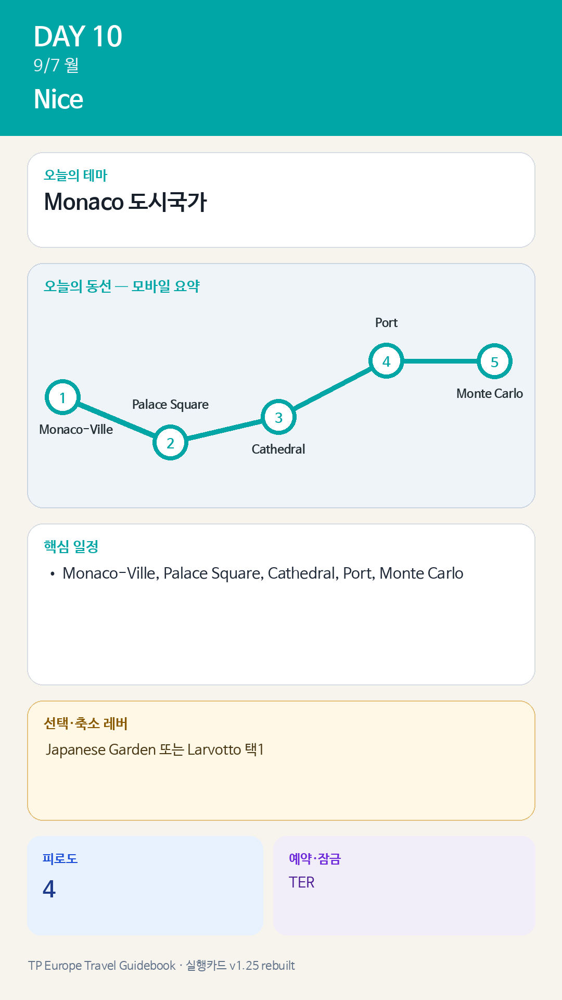

Day 10 · 9/7 월 · Nice
- 핵심 실행
- Monaco 당일치기
- 권장 출발
- 08:30 출발 권장
- 완충
- 역·언덕 이동 30분
시간표
| 시간 | 일정 | 실행 포인트 |
|---|---|---|
| 09:00 전후 | Nice-Ville → Monaco TER | 역내 엘리베이터·출구 확인 |
| 10:15–12:30 | Monaco-Ville·Palace Square·Cathedral | 버스·엘리베이터 활용 |
| 12:40–13:30 | 가벼운 점심 | Old Town 또는 항구 |
| 13:40–14:40 | Port Hercule·Condamine | 도시단면 관찰 |
| 14:50–16:10 | Casino Square·Monte Carlo | 외관·정원 중심 |
| 16:10–17:00 | Japanese Garden 또는 Larvotto | 둘 중 하나만 |
| 17:20 전후 | Nice 귀환 | 저녁은 가볍게 |
피로도
4/5
이 날의 장소
일자별 시간표와 본문 표기에서 찾은 것이다. 하루의 전부가 아니라 장소 카드가 있는 것만 담는다.
이 날의 메모
Monaco 당일치기: 왕실 구시가지, 항구, Monte Carlo
Palace Square와 Monte Carlo가 핵심이다.
상세 실행 확인
- 최고 리스크
- 월요일 운영·경사·혼잡
- 우선 삭제
- 정원/Larvotto 중 하나
- 대체안
- 구시가지·대성당 중심
- 식사·휴식
- Monaco-Ville 또는 Port
- 잠금 필요
- TER
모바일 카드 이미지

카드의 지도영역은 일정 순서를 보여주는 개요이며 내비게이션이 아닙니다. 실제 도보·운전 경로는 Google Maps에서 다시 계산하세요.